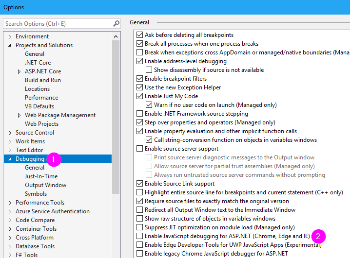
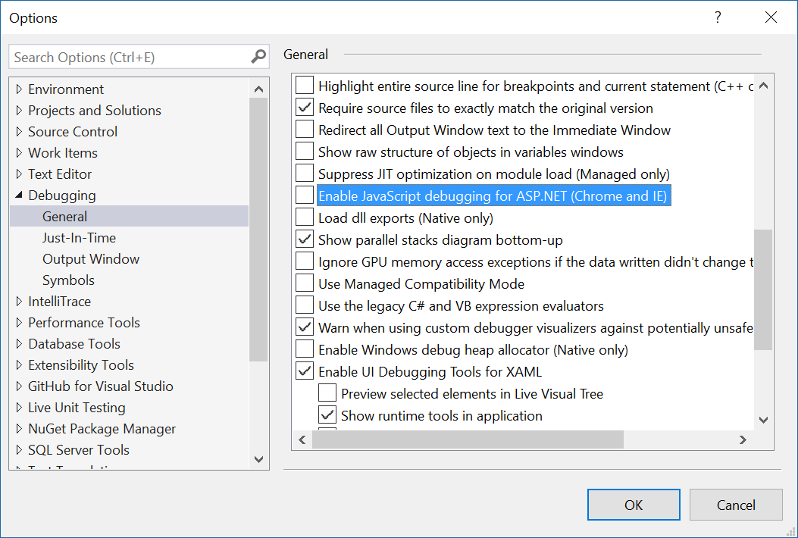

How to stop browser closing automatically when you stop debugging on VS 2017
I'm trying out the new VS 2017 RC and wondering if anyone knows how to get the previous debugging behavior back
In VS 2015 it went like this:
Press start debugging
- Website opens in new Chrome tab
- Press stop debugging
- Website is still open and the site is still running/active
Now in 2017:
- Press start debugging
- Website opens in new window that can't dock with any other Chrome windows/tabs
- Press stop debugging
- Website/Chrome window closes, can't continue using the site unless I manually go to the localhost window in Chrome
Is it possible in 2017 to switch back to the 2015 style? So the Chrome/Website window can dock with other Chrome windows/tabs, and it stays open after you stop debugging?
Additionally, I find the new Chrome window frustrating to use, as it seems not to have any history/content available. E.g I can't autocomplete forms or urls, which is very annoying when I'm trying to test a form
Answer
Visual Studio 2017 version 15.7 and higher & Visual Studio 2019 changed things again.
Disabling the following checkboxes will allow you to keep the browser open (doesn't close after stop debugging) and opens another tab (instead of another window):


Tools > Options > Debugging > General
- Disable "Enable JavaScript debugging for ASP.NET (Chrome, Edge and IE)".
Tools > Options > Projects and Solutions > Web Projects
- ( Visual Studio 2017 ) Disable "Stop debugger when browser window is closed".
- ( Visual Studio 2019 ) Disable "Stop debugger when browser window is closed, close browser when debugging stops".
Suggest
The reason for the change in behavior is due to VS 2017's support for debugging JavaScript/TypeScript running in Chrome. See announcement here https://blogs.msdn.microsoft.com/webdev/2016/11/21/client-side-debugging-of- asp-net-projects-in-google-chrome/
To return to the 2015 behavior where Chrome is not closed by the debugger, disable the IE/Chrome script debugger in Tools -> Options like so:
